2nd place at Nuit de l'Info (822 teams). Built a Policy-as-Code scanner with 103 security rules (graded 18/20). Day 81/100 of #100DaysOfDevOps, Day 23/100 of DevSecOps.
I hold a Bachelor's in Telecommunications and Computer Science from ISITCOM Hammam Sousse (2023–2026) and I am starting a Professional Master's in Network Services and Security at ISITCOM (2026–2028, expected). My final-year project was a Policy-as-Code scanner with 103 security rules, graded 18/20.
I am preparing for the Certified Kubernetes Administrator (CKA) exam, planned for 2027, and practising CI/CD attack-chain labs on TryHackMe. Currently on Day 81/100 of #100DaysOfDevOps and Day 23/100 of DevSecOps.
The tools I use to build secure, scalable cloud infrastructure — end to end.
Industry certifications and hands-on training courses.
Microsoft Azure
2025
In progress — exam planned 2027
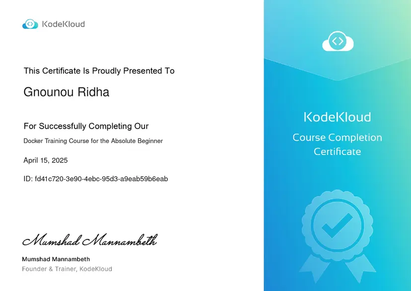
Docker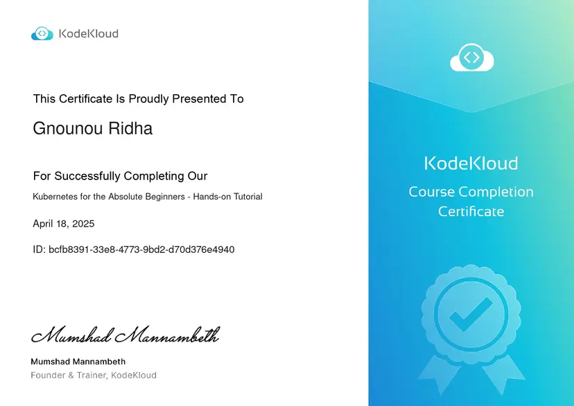
Kubernetes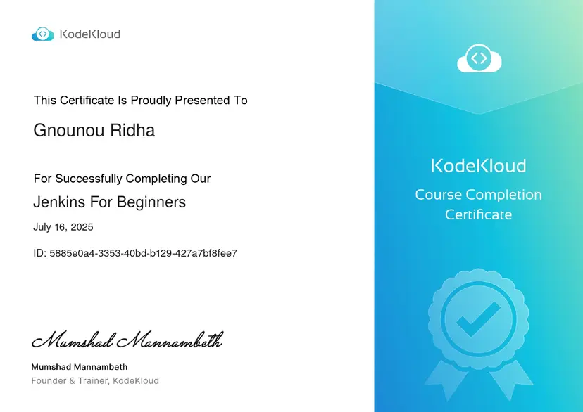
Jenkins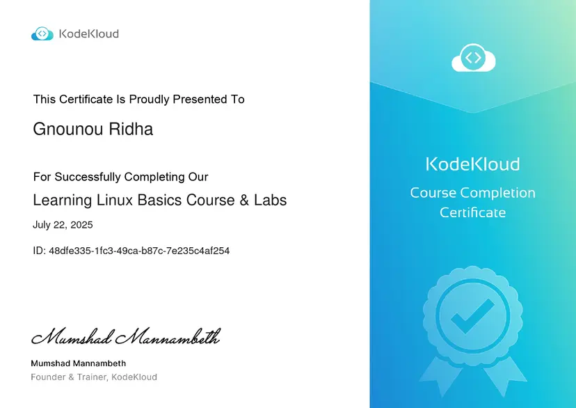
Linux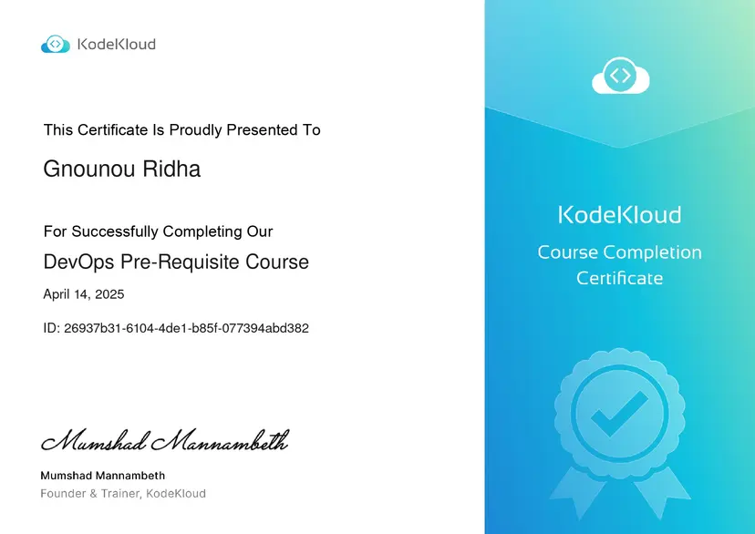
DevOps Pre-ReqLab exercises on TryHackMe covering CI/CD attack chains (merge-build exploitation, dependency confusion, build-server compromise), software supply-chain attacks, and static application security testing (taint analysis, false positives and false negatives). These are structured lab environments, not real-world engagements.
Real-world projects spanning cloud security, DevOps, and full-stack infrastructure.
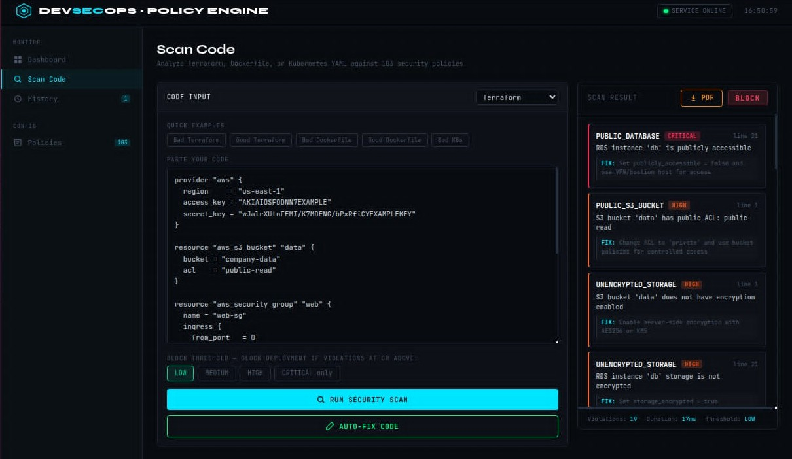
Automated policy enforcement across DevOps pipelines to prevent security drift and compliance failures.
Stack: FastAPI, Python, Prometheus, Grafana, VS Code Extension
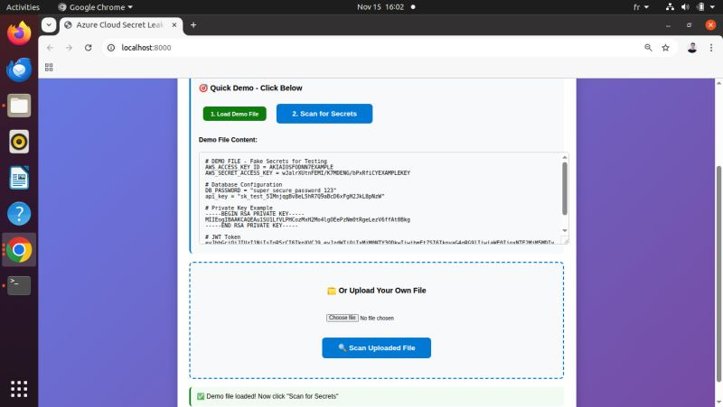
Detect exposed secrets (API keys, passwords, private keys) in codebases before they cause breaches.
Stack: FastAPI, Azure
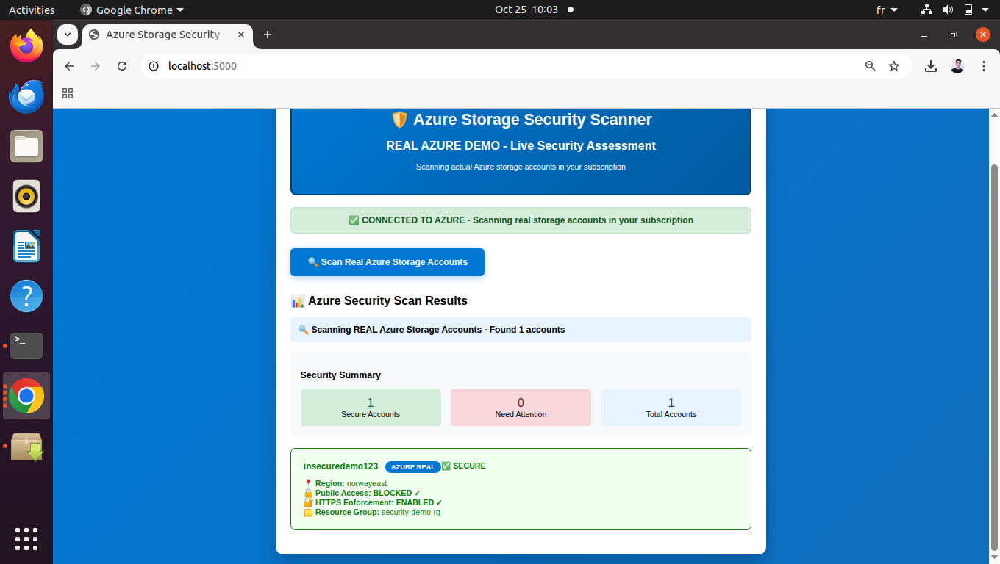
Identify and fix security risks in Azure Storage accounts to prevent data breaches and unauthorised access.
Stack: Python, Azure SDK, REST APIs
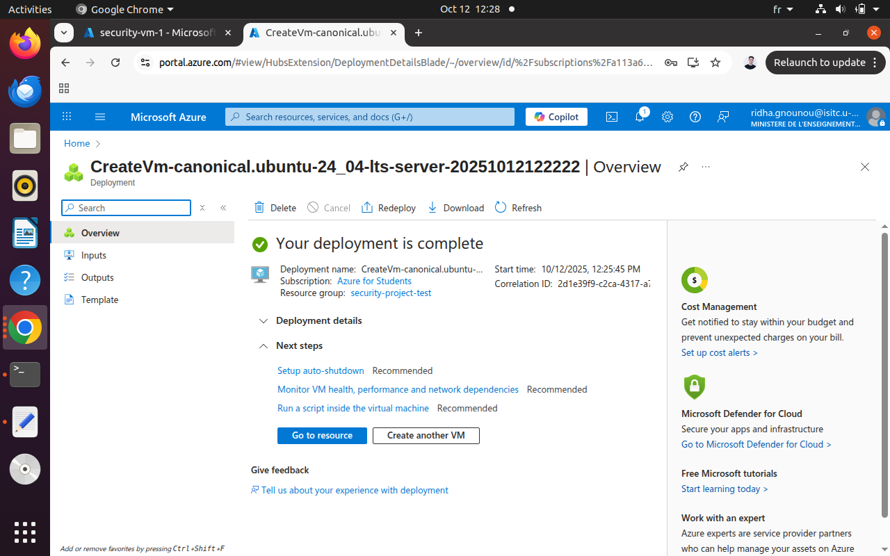
Build a secure automated environment for attack detection within Azure Student subscription limits.
Stack: Terraform, Wireshark, tshark, Nmap, Bash
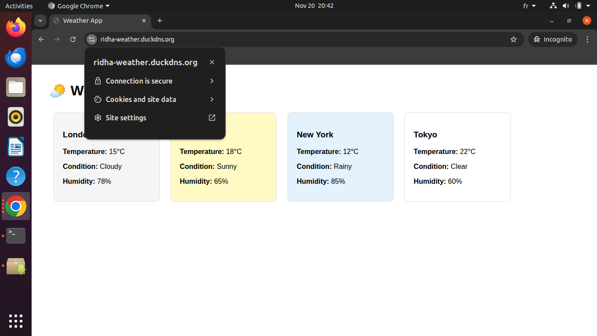
Build a production-grade pipeline with microservices, Kubernetes and automated SSL.
Stack: FastAPI, Flask, Docker, K3s, Let's Encrypt, Jenkins
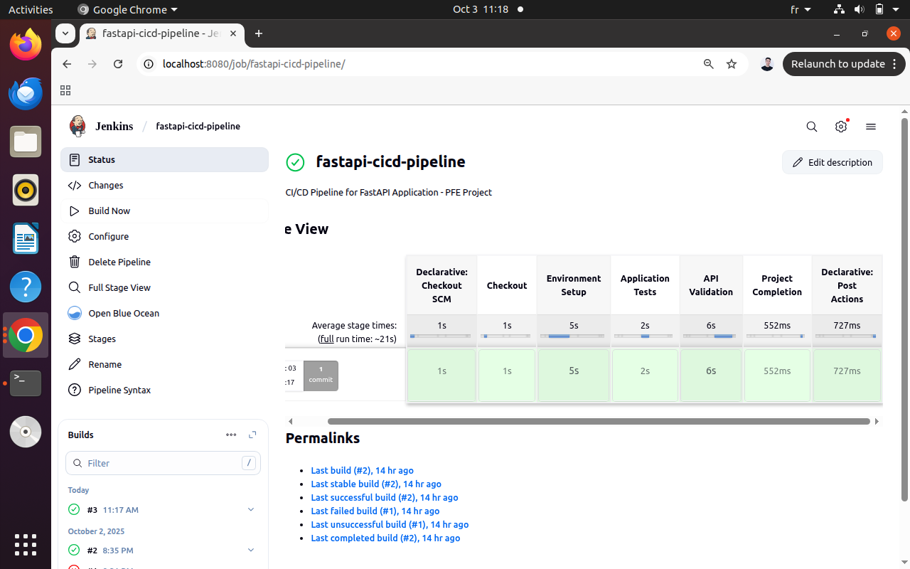
End-to-end CI/CD pipeline with containerisation and automated Kubernetes deployment.
Stack: FastAPI, Docker, Docker Compose, Jenkins, Minikube
Open to junior DevOps, DevSecOps and Cloud Security roles, and to a 6-month master's internship (PFE). Based in Tunisia, open to relocation. Reach out — I respond within 24h.